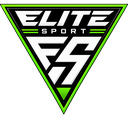

ELITE SPORT · DESARROLLO
Avances del proyecto
Registro de avances organizados por semana y ubicación dentro del proyecto.
Semana 1
Modo oscuro / claro
Tema persistente y fondo de estadio.
Filtros del catálogo
Búsqueda, liga, disponibilidad y orden.
Menú hamburguesa
Navegación adaptable y accesible.
Validación de formularios
Validación en vivo y mensajes.
Alertas y notificaciones
Toast y confirmaciones.
Semana 2
Delegación e hidratación
Eventos delegados y estados de carga.
Carrusel, zoom y animaciones
Galerías, zoom y microinteracciones.
Fetch, lazy loading y Dropbox
Carga diferida de imágenes.
PWA y offline
Service Worker y conectividad.
Seguridad XSS y subida
Sanitización y optimización de archivos.
Semana 3
Componentes y Shadow DOM
Componente encapsulado de producto.
Mobile-first y PWA
Diseño adaptable a celular y tablet.
Core Web Vitals y DOM
Rendimiento, estructura y sanitización.
Accesibilidad y contraste
Contraste, foco visible y teclado.
Smoke Testing del DOM
Verificación rápida de componentes.
Semántica HTML5 y auditoría
Estructura semántica y revisión.